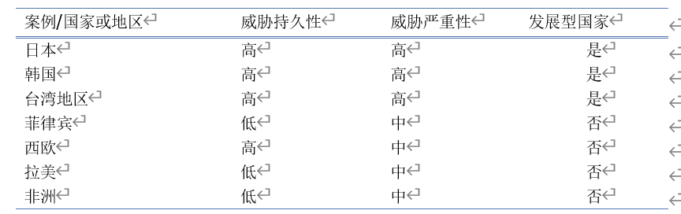
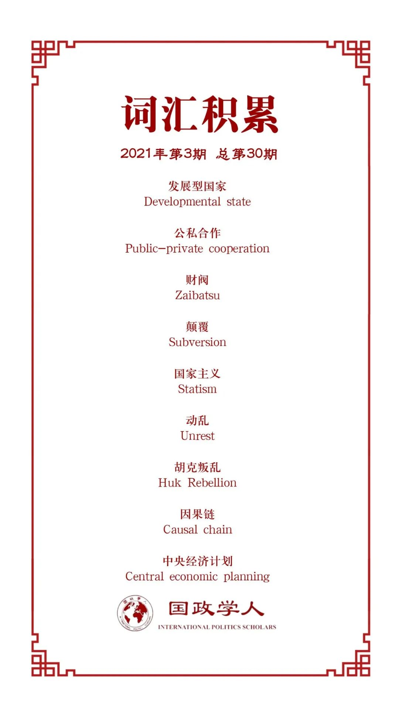

收录于合集

作品简介
【作者】 詹姆斯·李（James Lee）于2018年从普林斯顿大学获得政治学博士学位，目前是加州大学圣地亚哥分校全球政策与战略学院全球冲突与合作研究所博士后。
【编译】 邵良（国政学人编译员，中国人民大学硕士毕业生）
【校对】 李思
【审核】 姚寰宇
【排版】 高辉
【美编 】杜丛竹
【来源】 James Lee (2020). US grand strategy and the origins of the developmental state, Journal of Strategic Studies, 43:5 , 737-761, DOI: 10.1080/01402390.2019.1579713.
【归档】 《国际关系前沿》2021年第3期，总第30期。
期刊简介
《战略研究杂志》是涵盖军事和外交战略研究的同行评审学术期刊。自1978年第一期问世以来，《战略研究杂志》就率先在学者和实践者之间促进了战略研究领域的新思维。
“东亚模式”背后的美国影响
US grand strategy and the origins of the developmental state
詹姆斯·李（James Lee）
内容提要
已有研究通常将日本、韩国和台湾地区的经济奇迹归功于一种被称为“发展型国家/地区”的国家资本主义模式。本文探讨了冷战对发展型国家的影响。美国的大战略制定者更加重视受意识形态对手威胁更大的盟友的经济发展。因此，美国援助机构深入参与了日本、韩国和台湾地区的政权建设与经济规划过程。作者通过对比美国在台湾的政策和美国在菲律宾的政策来验证这一观点。和台湾地区相比，菲律宾面临的意识形态威胁较弱。
文章导读
01
引言
东亚各国的经济崛起受到了学界的广泛关注。比较政治学学者就此提出了“发展型国家”模式（“东亚模式”），探讨有关经济增长的政治原因和国家在工业化中的作用。
本文所要研究的问题是，为什么美国支持在东北亚建立国家政治权力集中程度极高的发展型国家，而不是在其他地方。须知，发展型国家的经济模式远远偏离了符合美国意识形态偏好的经济发展模式——自由市场资本主义。本文认为，美国这样做的原因在于其认为日本、韩国、台湾地区所面临的意识形态威胁尤其强烈，因此有必要借助“国家”资本主义模式，直接参与这些盟友的经济规划过程，以便加强其抵抗意识形态对手威胁的能力。与以往研究不同，本文发现地缘政治不仅能够影响经济和生活水平，还能影响国家建设的进程以及制度运行的质量。
02
冷战与发展型国家
发展型国家概念的核心是一个在指导资本主义发展方面发挥主导作用的强大国家：国家利用经济试点机构，对国家整体经济发展进行明智的干预，同时与私营部门保持合作关系。以往学者们普遍认为，这些干预措施使得发展型国家的经济增长率高于自由市场资本主义国家的经济增长率。本文考察了国际环境对发展型国家形成的影响，发现美国在东亚对国家资本主义的支持源于其在东北亚所面临的意识形态威胁。
美国是资本主义国家，所以一般情况下，它主张鼓励私营工业，减少贸易和外汇管制。然而，由于美国的东亚盟友面临持续的安全威胁，采取全面的自由放任改革将导致不稳定。相反，美国采取了一种更为渐进的方法，在支持经济规划的同时，推行渐进式改革。通过与东亚盟友的经济官僚机构合作确定常规的宏观经济目标，确保如果美国减少并最终消除援助，东亚盟友的经济生存能力不会受到损害。这种经济计划和资本主义的混合形成了公私合作的经济模式，同时东亚盟友的国内企业也暴露在世界市场的竞争中。
03
**
**
冷战期间美国盟友面临的意识形态威胁
美国的东亚盟友所面临的意识形态威胁既持久又严重，原因有三：首先，美国官员认为，日本、韩国和台湾地区的意识形态对手对其怀有高度敌意，特别是在冷战的最初十年；其次，美国官员认为，这些盟友极易遭到意识形态对手的颠覆；第三，美国不能像在拉丁美洲和非洲那样，在东北亚使用军事力量来消除意识形态对手的威胁。
表1：美国盟友面临的意识形态威胁

随着中国内战形势的剧变，美国官员非常担心日本遭受同样的意识形态颠覆，这导致美国停止了对日本财阀的分权计划，转而将重点放在推动日本的政治稳定和工业复苏。为了促进日本自身的经济增长。美国让日本的经济运行处于国家的高度管控之下。经济学家利昂·霍勒曼（Leon Hollerman）后来评论，“美国在占领日本期间创造了一个强大的国际经济控制机器，随后被日本官僚机构继承并用于自己的目的。”
就韩国而言，虽然美国在20世纪50年代主要关注的是维持韩国的稳定和安全，但在随后的十年里，美国对韩国行政官员直接参与经济规划的经济模式给予了相当程度的支持。1960年11月，美国政府对朝鲜半岛所制定的战略目标之一是促使韩国“减少对外部军事和经济援助的依赖”。实现这项目标，美国需要“鼓励和帮助韩国迅速和有力地准备与执行各项计划和政策，建立健全的国民经济和财政基础。”朴正熙于1961上台后不久，美国肯尼迪政府发表的一份立场文件指出，韩国官僚机构应在经济建设中发挥主导作用。
除了日韩两国，本文作者重点关注美国对台湾地区经济政策和对菲律宾经济政策，以及通过对比二者情况来证实作者提出的因果机制，因为这两者同质性较高，符合最相似系统比较（the logic of a most similar systems design）的条件。20世纪50年代初，台湾地区和菲律宾在宏观经济、地理和政治特征上表现出许多重要的相似性。他们都是冷战时期的美国盟友，地理位置相近。美国开始提供援助时，二者的经济主要是农业。虽然台湾地区在初期确实比菲律宾有优势，但二者差别很小。
04
美国援助与台湾“安全”
1949年以来，中国内战虽然实际上基本结束了，但是理论上从未结束。海峡两岸从未签署过停战协定。除此之外，非军事的意识形态颠覆威胁也被认为极有可能。1958年以后，虽然国民党政权面临的威胁严重性程度有所下降，但是对美国来说，想要维持台湾地区内部的稳定，仍需要大量经济援助。这种情况对美国来说是不可持续的。但美国不能立即撤回援助：这样做会严重削弱国民党政权，增加其被颠覆的可能性，并诱使解放军发动新的军事进攻。美国官员必须制定一项战略，以最小的代价解决台湾地区面临的长期“安全威胁”。经济发展使他们得以实现这一目标。
美国将国家主导的发展方式视为对台援助计划的权宜之计。虽然自由市场资本主义也有助于经济增长，但政府主导的经济规划对美国有额外的好处：它明确规定了美国援助与实现宏观经济目标之间的联系；它有助于防止援助被转用于非预期用途；它让美国官员在台湾经济政策制定过程中发挥了作用。在中国大陆，国民党政府的腐败导致了它的垮台：虽然美国给予了它大量援助，但是却被国民党浪费掉了。在台湾地区援助计划的最初几年，美国派出的在台官员“实际上管理着台湾”。即使到了1956年，台湾地区的经济状况有了很大改善以后，美国官员仍然表示，在目前的情况下，若无在台美国政府机构的同意和全力支持，台湾地区的任何经济计划都不可能取得成功。
美国官员对台湾地区发展型国家的建立起到了至关重要的作用。通过在规划经济援助方面的合作，美国官员协助国民党官员规划工业项目，说服国民党经济官僚机构中的技术官僚采取资本主义的发展模式和更自由的经济政策。为了防止革命的发生，美国与国民党政府合作，实施了一项雄心勃勃、非常成功的土地改革计划。美国在日本和韩国也推行了类似计划。这项计划阻止了国民党政权被地主阶级控制，促进了台湾地区资本主义制度的形成。美国还通过小微企业贷款基金和示范工厂计划，利用对台援助为台商建立新企业提供资金。美国顾问经常直接参与国民党政府招募私人投资者的工作，提高了国民党政府吸引私人投资的能力。美国的建议促进了国民党投资法规的自由化和台湾出口加工区的建立。美国使台湾地区走上资本主义发展战略的最后阶段，发生在五十年代末六十年代初的经济改革中。美国通过这一时期的一系列经济改革，推动台湾经济走向出口导向型工业化，使台湾地区能够独立赚取外汇，从而逐步减少对台经济援助。几乎在同一时间，美国也在韩国实行了类似的改革政策。到1965年美国官方对台援助计划结束时，台湾地区已经成为了一个以私营经济为基础的发展型“国家”。
05
美国对菲律宾的援助
菲律宾于1946年7月4日脱离美国获得独立。此时，国际共产主义运动对菲律宾国家安全的主要威胁来自胡克叛乱（Huk Rebellion）。然而由于种种原因，到1952年，胡克叛乱被完全平定。1954年以后，菲律宾内部再也没有出现过和共产主义阵营主要大国有关联的叛乱活动。可以说此后国际共产主义对菲律宾的威胁已经完全消失。
鉴于所受到的意识形态威胁较弱，美国没有试图在菲律宾推动国家主导的工业化。在台湾地区，美国援助机构直接向台湾企业家提供资金。而在菲律宾，美国援助则交给了菲律宾政府自行处理，因此最终未能促进经济发展。
一些证据显示，美国之所以没有促进菲律宾的经济发展，是因为其不愿意在远离冷战前线阵地的菲律宾投入大量资源。1946年至1961年间，美国授权向台湾地区和韩国提供的经济援助和军事援助远远高于菲律宾，尽管后者的人口比台湾地区和韩国的人口都要高。1956年，美国国务卿杜勒斯就此向菲律宾总统马格萨伊解释说，美国的大部分援助都投向了朝鲜、台湾地区和印度支那，是因为它们处于前线，直接面临着共产主义的军事威胁。
援助水平相对较低也使得美国难以加强菲律宾国家对国内社会独立自主的权力。查莫斯·约翰逊（Chalmers Ashby Johnson）认为，发展型国家的一个特点是“避免成为利益集团的俘虏”。在日本、韩国和台湾地区，利益集团主要是大型私营企业。因此，与其他资本主义国家相比，这些国家能够保持更大程度的政治独立。出现这种情况的原因是，这些国家依靠来自美国的大量资金推动了土地改革，削弱了地主阶级的力量，使得国家权力可以延伸到农村地区。菲律宾的土地改革本来也会产生类似的效果。在胡克叛乱最严重的时期，美国曾初步努力推动菲律宾的土地改革，以免胡克组织继续利用农民的不满情绪扩大叛乱。然而，正如先前的研究所指出的那样，胡克叛乱威胁的平息导致了土地改革热情的相应下降。面对来自菲律宾精英的坚决反对，美国推动菲律宾土改的努力实际上在1954年结束。
06
结论
本文认为，为了回应东北亚意识形态威胁，美国在日本、韩国和台湾地区建立发展型国家/地区的过程中发挥了关键作用。美国不仅会接受，甚至会积极支持中央集权性质的经济计划，这不是因为美国对资本主义的支持减少了，而是因为意识形态对手的政治紧迫性增加了。
译者评述
“东亚模式”在国内经济学界所受到的关注远远高于其在国际关系学界所受到的关注，其所引发的标志事件是2016年著名经济学家林毅夫和张维迎的产业政策之争。这场争论的核心是中国该不该继续学习日本韩国等发展型国家的经济模式，继续采取各种产业政策，以行政权力干预市场的方式促进经济增长。
本篇文章可以作为国际关系学者对这场争论的间接回应。根据作者所爬疏的史料，发展型国家经济模式的成功，背后有着一个中国不可复制的关键原因，即美国在发展型国家形成过程中提供的经济援助和行政干预。美国的经济援助和行政干预一定程度上克服了其东亚盟友国家建设过程中因为传统文化、社会结构等因素而面临的挑战，如腐败和权力寻租。国民党政权在大陆时期和台湾地区时期的纵向比较足以证明美国干预对发展型国家成功路径的不可或缺：大陆时期的国民党，所获得的美国援助比台湾时期只多不少，但是由于美国并没有直接参与这些援助的具体分配使用，花的钱全都打了水漂。中国只是从发展型国家学来了“产业政策”，却不可能允许美国官员像在日本韩国那样深入地干涉国家内政。这样一来，由于东亚人情社会的传统文化和社会结构，中国政府将很难避免产业政策推行过程中的权力寻租，因此学习发展型国家的最终结果很可能是竹篮打水一场空。
东亚发展型国家的经济崛起在历史学、社会学等相关专业也引发了热切关注。其中代表则是著名旅美历史学家余英时对德国著名社会学家马克斯·韦伯宗教社会学经典理论的反驳。韦伯在《新教伦理与资本主义精神》《中国的宗教：儒教与道教》等书中指出，由于宗教、传统文化伦理价值观的影响，西方基督教国家能够走向现代化，而深受儒家文化影响的中国则不能。余英时则借着东亚国家经济崛起的契机对韦伯的观点予以反驳，认为东亚儒家文化自身蕴含着现代化的因素。
本篇文章也可以作为国际关系学者对韦伯- 余英时二者分歧的间接回应。文章通过详实的资料证明，所谓东亚国家的经济崛起，背后是来自美国的经济援助和行政干预，是受基督教文化影响的美国人对受东亚传统儒家文化影响的东亚盟友政府官员的社会规训，其实质是一种强制性的文化输出。从本文所提及的东亚发展型国家经济崛起的过程来看，其经济崛起的这个结果和东亚文化自身蕴含的伦理、价值观毫无关系。而且，东亚文化在这个过程中扮演的是拖后腿的角色。
那么基督教文化和东亚文化之间的哪些差异，造成了二者对现代化的不同影响？本篇文章所使用的资料也可以帮助我们回答这个问题。本篇文章表明，对于国家获得的经济援助应该怎么分配、分配给谁的问题，基督教文化和东亚文化有完全不同的价值取向。受基督教文化影响的美国官员，大抵能够遵从法律和良心，采取有利于国家经济发展的资源分配方案。而受东亚儒家伦理亲亲尊尊人情社会支配的美国东亚盟友政府官员们，无疑是希望把经济援助分给和自己血缘、私交更为亲近的人，而不是分给更有利于国家经济发展、更符合法律规定分配标准的人。这就是大陆时期美国对国民党天文数字的经济援助全都打了水漂的根本原因。
因此，这篇文章的观点和所引用的史料、事件，有助于中国决策者更加深入地思考是不是要继续向“东亚模式”学习、是不是要继续全面复兴中国传统文化等国家大战略问题。
参考文献
[1] 〔德〕马克斯•韦伯著，阎克文译：《新教伦理与资本主义精神》，上海：上海人民出版社2018年版。
[2]〔德〕马克斯•韦伯著，康乐、简惠美译：《中国的宗教：儒教与道教》，桂林：广西师范大学出版社2010年版。
[3]贾国强：《张维迎VS林毅夫：产业政策存废之争》，载《中国经济周刊》,2016年第38期，第86-87页。
[4]余英时著：《余英时文集第3卷：儒家伦理与商人精神》，桂林：广西师范大学出版社2004年版。
词汇整理

文章观点不代表本平台观点，本平台评译分享的文章均出于专业学习之用, 不以任何盈利为目的，内容主要呈现对原文的介绍，原文内容请通过各高校购买的数据库自行下载。
好好学习，天天“在看”
国政学人
支持学术公益与知识传播
微信扫一扫赞赏作者 __赞赏
已喜欢，对作者说句悄悄话
取消 __
发送给作者
发送
最多40字，当前共字
上一页 1/3 下一页
长按二维码向我转账
支持学术公益与知识传播
受苹果公司新规定影响，微信 iOS 版的赞赏功能被关闭，可通过二维码转账支持公众号。